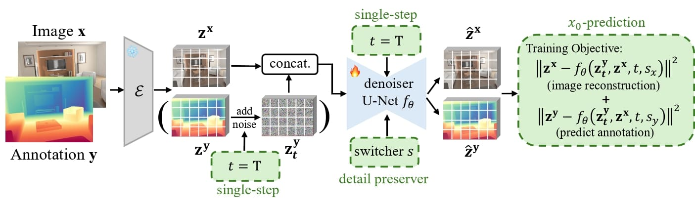
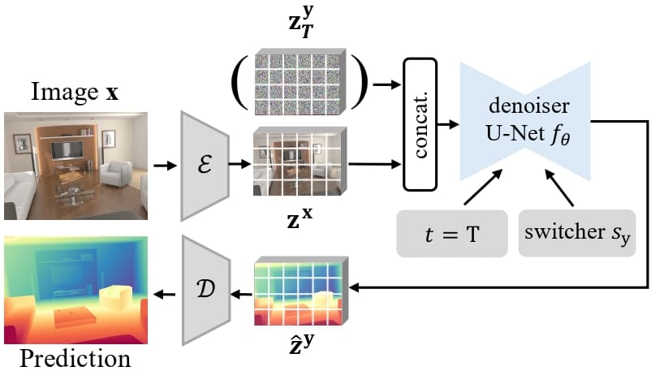
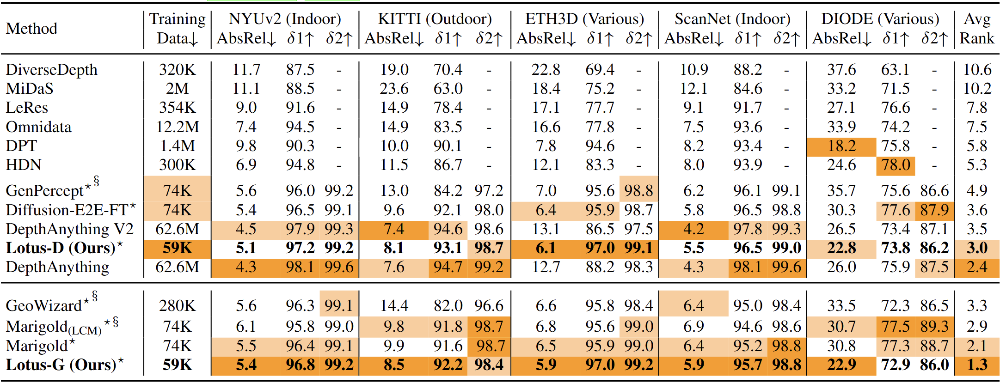
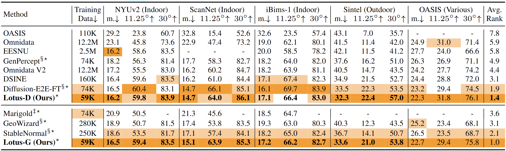

Leveraging the visual priors of pre-trained text-to-image diffusion models offers a promising solution to enhance zero-shot generalization in dense prediction tasks. However, existing methods often uncritically use the original diffusion formulation, which may not be optimal due to the fundamental differences between dense prediction and image generation.
In this paper, we provide a systemic analysis of the diffusion formulation for the dense prediction, focusing on both quality and efficiency. We find that the original parameterization type for image generation, which learns to predict noise, is harmful for dense prediction and the multi-step noising/denoising diffusion process is unnecessary and challenging to optimize.
Based on these insights, we introduce Lotus, a diffusion-based visual foundation model with a simple yet effective adaptation protocol for dense prediction. Specifically, Lotus is trained to directly predict annotations instead of noise, thereby avoiding harmful variance. We also reformulate the diffusion process into a single-step procedure, simplifying optimization and significantly boosting inference speed. Additionally, we introduce a novel detail preserver to achieve more fine-grained predictions.
Without scaling up the training data or model capacity, Lotus achieves SoTA performance in zero-shot depth and normal estimation across various datasets, with over $10\%$ performance gains in specific cases. It also enhances efficiency, being $600+$ times faster than existing diffusion-based methods.
After the pre-trained VAE encoder $\mathcal{E}$ encodes the image $\textbf{x}$ and annotation $\textbf{y}$ to the latent space: ①the denoiser U-Net model $f_\theta$ is fine-tuned using $x_0$-prediction; ②we employ single-step diffusion formulation at time-step $t=T$ for better coverage; ③we propose a novel detail preserver, to switch the model either to reconstruct the image or generate the dense prediction via a switcher $s$, ensuring a more fine-grained prediction. The noise $\mathbf{z_T^y}$ in bracket is used for our generative Lotus-G and is omitted for the discriminative Lotus-D.
The standard Gaussian noise $\mathbf{z_T^y}$ and encoded RGB image $\mathbf{z^x}$ are concatenated to form the input. We set $t=T$ and the switcher to $s_y$. The denoiser U-Net model then predicts the latent dense prediction that is further decoded to get the final output. The noise $\mathbf{z_T^y}$ in bracket is used for Lotus-G and omitted for Lotus-D.
Quantitative comparison of Lotus with SoTA affine-invariant depth estimators on several zero-shot benchmarks. The upper section lists discriminative methods, the lower lists generative ones. The best and second best performances are highlighted. Lotus-G outperforms all others methods while Lotus-D is slightly inferior to DepthAnything. Please note that DepthAnything is trained on $62.6$M images while Lotus is only trained on $0.059$M images.
Quantitative comparison of Lotus with SoTA surface normal estimators on several zero-shot benchmarks. Both Lotus-G and Lotus-D outperform all other methods with significant margins.
Please refer to our paper linked above for more technical details :)
he2024lotus